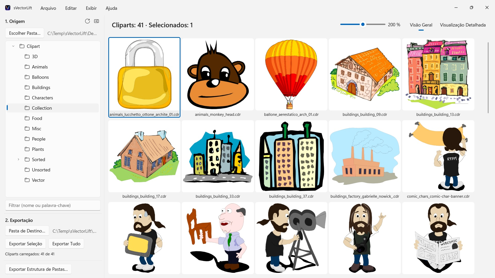
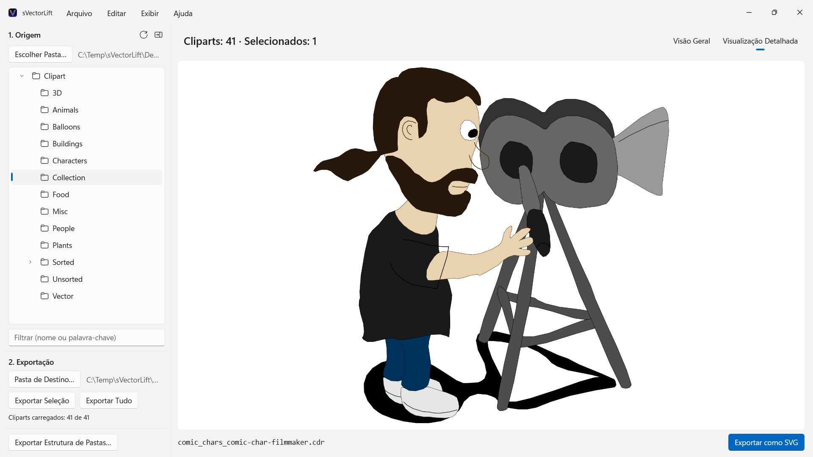

sVectorLift
Abre CorelDRAW 6–9 (.cdr), CMX inclusive CDRX, WMF, CGM, QuickDraw 3D e SVG
Milhares de cliparts vintage em CDs do CorelDRAW, presos em formatos que quase nenhum programa abre mais. O sVectorLift mostra coleções inteiras num relance e as transforma em SVGs de verdade, prontos para usar hoje.
 Assista ao vídeo – 3 minutos no YouTube, em inglês com legendas em português
Assista ao vídeo – 3 minutos no YouTube, em inglês com legendas em português


Em algum lugar da estante há um CD cheio de cliparts que você comprou um dia. Os arquivos continuam lá — mas quase nenhum programa do seu PC consegue abri-los, e menos ainda mostram a coleção inteira num relance.
Idiomas compatíveis (25): Deutsch · English · Español · Français · Italiano · Nederlands · Português (Brasil) · Português (Portugal) · Svenska · Norsk · Suomi · Polski · Čeština · Hrvatski · Magyar · Română · Türkçe · Русский · Українська · فارسی · ไทย · 日本語 · 한국어 · 简体中文 · 繁體中文
O app segue o idioma de exibição do Windows.
O sVectorLift torna essas imagens úteis de novo. Ele reconstrói cada desenho como um SVG de verdade: nítido em qualquer tamanho, editável e pronto para usar no Illustrator, Affinity, Inkscape, Figma — ou no seu site. Não apenas para ver de novo. Para usar de novo. É isso que significa o “Lift” do nome: arte vetorial vintage, elevada ao nível das ferramentas com que você trabalha hoje.
FORMATOS COMPATÍVEIS
- Documentos do CorelDRAW (.cdr), versões 6 a 9
- Corel Binary Meta File (.cmx) — inclusive a primeira variante CDRX, na qual outras ferramentas falham
- Windows Metafile (.wmf)
- Computer Graphics Metafile (.cgm)
- QuickDraw 3D Metafiles (.3dm, .3dmf), renderizados como imagem
- Scalable Vector Graphics (.svg), exibidos diretamente
Muitos arquivos com a extensão .cdr, na verdade, não são documentos do CorelDRAW, e sim CMX — e é exatamente aí que os conversores comuns falham. O sVectorLift lê os dois.
O sVectorLift foi feito para coleções de clipart: desenhos, símbolos, ilustrações. Não é um programa de diagramação e não pretende recriar folhetos de várias páginas nem artes-finais para impressão.
CONVERSÃO VETORIAL DE VERDADE
Aqui ninguém fotografa uma miniatura de pré-visualização. O sVectorLift lê o próprio desenho: traçados e curvas de Bézier, cores de preenchimento, degradês, contornos e padrões de traço, preenchimentos de padrão e textura, fotos incorporadas e objetos de texto. O resultado são dados vetoriais reais, que você pode redimensionar, recolorir e editar — e não a imagem de um desenho.
Já as imagens puramente raster são exportadas como PNG, para que nada se perca.
Precisa de uma imagem em vez de arte vetorial? “Exportar como PNG” e “Exportar como JPG” transformam qualquer desenho em imagem, inclusive arquivos SVG — no tamanho que você define em Configurações.
EXPLORAR A COLEÇÃO
- Árvore de pastas de toda a coleção de cliparts, incluindo subpastas
- Grade de miniaturas vetoriais nítidas, com tamanho ajustável de forma contínua
- Visualização detalhada — use as teclas de seta para percorrer a pasta
- Filtro por nome ou palavra-chave
- Seleção múltipla como no Explorador de Arquivos: clique, Ctrl+clique, Shift+clique, retângulo de seleção, Ctrl+A
- Abrir um arquivo individual direto do Explorador de Arquivos (“Abrir com” ou clique duplo)
- Pastas recentes, que lembram a subpasta e o arquivo selecionado
- Exportar a seleção ou a pasta inteira de uma só vez
- Converter estruturas de pastas inteiras, com todas as subpastas, de uma só vez — a estrutura é mantida na pasta de destino
- Renomear, mostrar no Explorador de Arquivos, mover para a Lixeira
- Reorganizar a coleção arrastando e soltando sobre uma pasta da árvore — com as regras do Explorador de Arquivos, Ctrl para copiar, Shift para mover, e desfazer com Ctrl+Z; também de e para o Explorador de Arquivos
RÁPIDO E LEVE
As miniaturas são geradas apenas para o que você está vendo no momento — em segundo plano e com cache. Pastas grandes abrem na hora, em vez de passar minutos processando milhares de arquivos.
Tudo fica no seu PC. Nenhuma conexão de rede, nenhuma conta, nenhuma coleta de dados.
CorelDRAW é uma marca da Corel Corporation. O sVectorLift é um programa independente, sem nenhum vínculo com a Corel.
- Requer Windows 11 ou posterior
- 24 idiomas
- Suporte: SwiftAppsBavaria@gmx.net
- Política de Privacidade